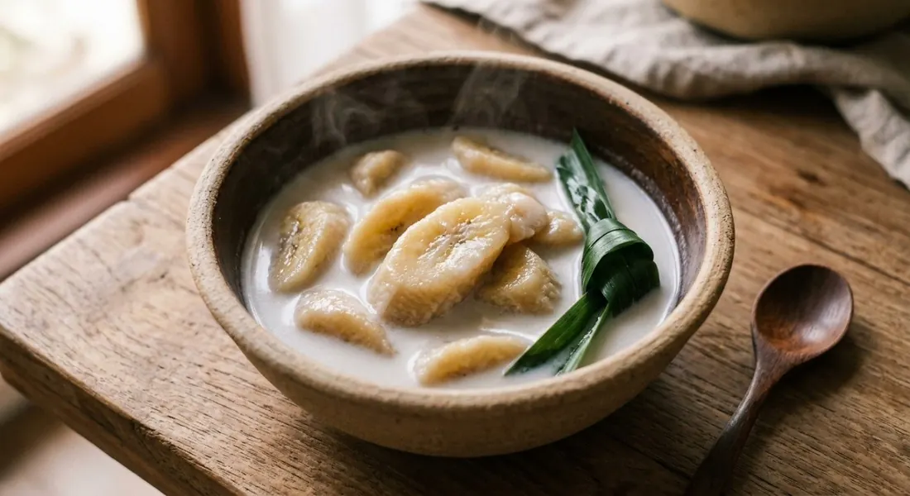

Kluay nam wa banana simmered in sweet coconut cream with pandan — the hot dessert of the Thai home kitchen, served in the warm bowl.

กล้วยบวชชี is a two-ingredient dessert that lives or dies on technique. The banana is กล้วยน้ำว้า, the kluay nam wa — the short, fat cooking banana of Thailand, firm and faintly tannic, which survives the simmer where a dessert banana would collapse. Wongnai's recipe is the classic frame: coconut cream, palm sugar, a little salt, and pandan knotted in for the scent.
The technique arguments are all about the same enemy: the banana's ยาง, its latex, which turns the coconut milk grey and the flavour astringent if it's not dealt with first. Wongnai boils the sliced banana once before it meets the cream; the Aroyd recipe boils the fruit whole, in its peel for 15–20 minutes; Kapook steams the slices for 30 minutes — her stated reason being that steamed banana stays "หนึบ, firm and chewy" and never goes astringent. A Bloggang cook built her entire recipe around the goal in its title: "coconut milk that doesn't turn grey."
All four agree on the finish: the cream must simmer gently, never boil hard, and stop the moment the banana is glossy and infused — "so the cream enters the fruit," as Wongnai puts it, "not so long that it goes to mush."
| Thai | English | Amount |
|---|---|---|
| กล้วยน้ำว้า | Kluay nam wa bananas | 1 comb |
| หัวกะทิ | Coconut cream | 1,000 ml |
| น้ำตาลปี๊บ | Palm sugar | 120 g |
| เกลือ | Salt | ½ tsp |
| ใบเตย | Pandan leaves | 5 |
Kapook's boxed-coconut version: 500 ml coconut milk, 80 g palm sugar + 80 g white sugar, with the bananas steamed 30 minutes instead of boiled. Aroyd's finish: head cream poured over at the end for richness.
How to handle the latex. Wongnai boils the sliced fruit once; Aroyd boils it whole in the peel for 15–20 minutes; Kapook steams the slices for 30. Three routes to the same end — a cream that stays white and a banana that doesn't bite back.
The sugar. Wongnai and Aroyd use palm sugar alone (120 g and ½ cup); Kapook splits palm and white 50/50; the Bloggang recipe is white sugar only, 1½ cups for a 12–14 banana batch. The palm-sugar versions taste deeper; the white-sugar one is the old sweet-shop style.
Ripe or half-ripe. Kapook explicitly allows "สุกหรือห่ามตามชอบ" — ripe or half-ripe, to taste. The half-ripe fruit holds its shape through the simmer; the ripe one is softer and sweeter.
When the cream goes in. Wongnai stages it — half early, half late; Aroyd builds on tail cream and pours head cream at the end; Kapook adds everything at once. The staged versions are richer at the surface.
Which banana. Every source specifies kluay nam wa; Kapook adds that kluay hom and kluay khai also work "in a different way" — softer, sweeter, less traditional.
This recipe is translated from the following Thai-language sources. Where they disagree, we've said so.
1. Wongnai — "วิธีทำ 'กล้วยบวชชี' นุ่มหนึบหวานละมุน กะทิหอมมันโดนใจ!" (the recipe used here) — wongnai.com
2. Kapook — "กล้วยบวชชีกะทิกล่อง สูตรง่าย กล้วยหนึบไม่เละอร่อยหอมหวาน" (the steam-30-minutes technique) — cooking.kapook.com
3. อร่อยดี (Thai Agri Foods) — "กล้วยบวชชี สูตรนี้ ทำขายก็ขายดี" (the boil-in-the-peel method + head-cream finish) — aroyd.co.th
4. Bloggang (jazzy-bong) — "กล้วยบวชชีสูตรอร่อย — น้ำกะทิไม่เป็นสีเทา" (the white-coconut-milk technique) — bloggang.com